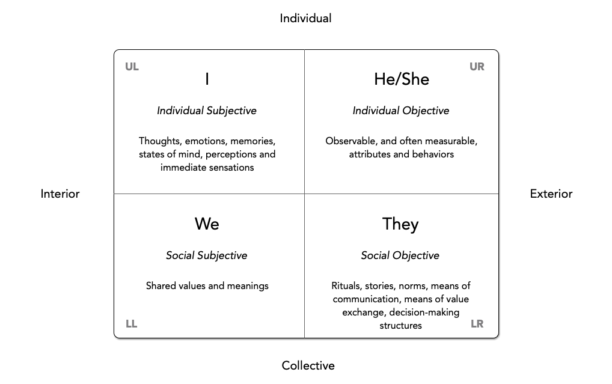

The Four Quadrants
Source: Ken Wilber, from the book A Brief History of Everything, 1996

I originally came across this model in a book by Ken Wilber, titled A Brief History of Everything.
It’s become a foundational piece of Wilber’s Integral Philosophy, something he terms AQAL, for All Quadrants, All Levels.
But I’ve found over the years that the Four Quadrants model can stand on its own, and be usefully understood and applied without reference to other pieces of Wilber’s philosopy.
I’m going to describe my understanding of this model, as it applies to us humans. (Wilber often describes it in more general, broadly philosophical terms.)
In Brief
We tend to perceive reality from four different perspectives, ofter referred as the four quadrants. Understanding these perspectives as four valid and complementary ways of perceiving the world helps us gain a more complete and useful understanding of people and situations.
An understanding of these four quadrants of perception is useful because it helps us understand that very different views of reality (Freudian psychology vs. Skinner’s behaviorism, for example) are not contradictory or mutually exclusive, but rather are complementary. Views from these different perspectives may be equally valid, even if they are very different ways of looking at the world.
The four quadrants are formed by the intersection of two dimensions.
The first dimension (left or right) can be expressed as either interior or exterior. The second dimension (up or down) can be expressed as either individual or collective. Combining these, we get the four quadrants.
We can think of these as the individual subjective, the individual objective, the social objective and the social subjective.
Individual Subjective
Each of us experiences a complex inner world of sensations, emotions, thoughts and feelings.
And while others may report having similar feelings – or very different ones – no one else can actually experience our inner world in the same way that we can.
These inner experiences can vary from the mundane – hunger, pain, fear – to the sublime – wonder, love, reverence.
The inner experiences that we have can be highly individual – you and I may have very different inner reactions to something happening in the world around us.
And the relationships between external stimuli and our inner feelings can sometimes be obvious, but at other times rather complex and even mysterious.
When considering the multiple perspectives we can take regarding a thing, some of these viewpoints may fairly be considered subjective.
This is not to imply that subjective views are invalid, or unworthy of consideration – far from it.
The Individual Subjective is depicted in the upper left quadrant of the diagram, and so is sometimes referred to simply as UL.
Individual Objective
An objective perspective views something from an outer, or exterior vantage point, and does so without being unduly influenced by the personal feelings or opinions of the observers.
Unlike subjective perspectives, other objective observers should be able to put themselves in our shoes, and make the same observations that we have, from the same perspective.
One of the advantages of an objective perspective is that multiple independent observers should be able to agree on the characteristics or attributes of an object being observed, and can therefore reach agreement on what we generally describe as the facts of the matter.
The Individual Objective is depicted in the upper right quadrant of the diagram, and so is sometimes referred to simply as UR.
Social Subjective
Humans also have subjective experiences of the societies that we form, and the groups in which we participate. Because these experiences are generally shared, we can refer to this sort of perspective as an intersubjective one.
Each one of us is a member of one or more groups. We may be part of a family, part of a team, part of an organization, part of a state. And such groups tend to have their own special perspectives, and their own sets of interests. And members of such groups tend to share certain attributes of their interior worlds, such as a common set of values.
Elements of our cultures – shared symbols and stories and other artifacts – help to bind us together into closely knit societies by encouraging and shaping common inner thoughts and feelings about the forms of our societies, and the ways in which we work together.
The Social Subjective is depicted in the lower left quadrant of the diagram, and so is sometimes referred to simply as LL.
Social Objective
This is an objective view, not of a single individual, but of a collective, or what we might call a society, including observations of social systems as members of the society interact with each other.
This is the perspective we take when viewing a human society from the exterior. This might include observation of their rituals, their institutions, their means of communication and means of value exchange.
This is sometimes called an interobjective perspective.
The Social Objective is depicted in the lower right quadrant of the diagram, and so is sometimes referred to simply as LR.
Harari’s Distinctions
It’s worth noting that Yuval Noah Harari, in his book Sapiens: A Brief History of Humankind, uses the terms subjective, intersubjective and objective to describe, respectively, the upper-left, lower-left and right-hand sides of the four quadrants, defining them like this:
“An objective [right-hand] phenomenon exists independently of human consciousness and human beliefs."
“The subjective [upper-left] is something that exists depending on the consciousness and beliefs of a single individual. It disappears or changes if that particular individual changes his or her beliefs.”
“The intersubjective [lower-left] is something that exists within the communication network linking the subjective consciousness of many individuals. If a single individual changes his or her beliefs, or even dies, it is of little importance. However, if most individuals in the network die or change their beliefs, the inter-subjective phenomenon will mutate or disappear.”
Example of Application from Rob Austin
The Four Quadrants model can be applied in all sorts of contexts, which is part of what makes it so useful. Let me give you a couple of business examples. Take a look at the following words from Rob Austin in his insightful little book, Measuring and Managing Performance in Organizations.
One frequent analogy casts the manager in the role of an airplane pilot guided by organizational measures that are like cockpit instruments.
Mechanistic and organic analogies are flawed because they are too simplistic. Kaplan and Norton’s cockpit analogy would be more accurate if it included a multitude of tiny gremlins controlling wing flaps, fuel flow, and so on of a plane being buffeted by winds and generally struggling against nature, but with the gremlins always controlling information flow back to the cockpit instruments, for fear that the pilot might find gremlin replacements. It would not be surprising if airplanes guided this way occasionally flew into mountainsides when they seemed to be progressing smoothly toward their destinations.
Note that Rob starts with exterior perspectives of collectives: a manager guiding an organization, and a pilot flying an aircraft. But then he goes on to expose the interior feeling (fear) of individuals who are not only being guided, but being asked to objectively report the data on which their performance will be graded! He then suggests the sort of culture (interior) such a collective of “gremlins” might develop in such conditions, and what sort of collective behavior they might exhibit. So, while Austin may not have consciously or explicitly referred to the Four Quadrants model, seeing his work as an example of this model may help us gain similarly powerful insights in other situations.
Example of Application from Liker & Hoseus
Here is another example, from Toyota Culture: The Heart and Soul of The Toyota Way, by Jeffrey Liker and Mike Hoseus. Here, Mike tells a story of learning first-hand some of the elements of the Toyota culture.
As a new group leader, I was sent to Tsutsumi to spend a month getting an appreciation of working on the line and mastering one process. The team leaders told us no one would be able to complete the whole job by the end of the month, but I was determined to prove them wrong. I was installing liners underneath the wheel well when my air gun slipped, and the driver bit scratched the paint on the inner lip of the wheel well. I gasped and looked around – no one saw me do it – but they had told me to pull the andon (rope) cord if I made or caught any defect. It was my moment of truth. My first reaction was to let it go. No one would probably see the scratch anyway, and no one would know that I made it. But my conscience got the best of me, and I wanted to see if they really meant what they said about admitting mistakes. So I pulled the andon and the team leader came to fix the problem and showed me how to hold the bit with a free finger in order to stabilize it better: But he did not seem angry at me for making the scratch.
Then at break we gathered for our afternoon group meeting where the group leader gave out information on safety and quality issues and heard back concerns from the members.
They spoke Japanese so I could not understand what they were saying until I heard the words, “Mike-san.” Well that got my attention so I listened carefully…more Japanese and then “scratchee scratchee” …and then more Japanese. So here it was; finally I was going to get called out for messing up and they were going to do it in front of everyone. Then, all of a sudden, the whole group looked at me and clapped and smiled and patted my back and shook my hand as they headed back to the line. I couldn’t believe it, after double checking with an interpreter just to make sure, they were applauding me because I made a mistake and admitted it. I felt like a million bucks, and guess what I did the next time I made a mistake?
Notice how the story talks about individual behavior (Exterior of an Individual), group behavior (Exterior of a Collective), individual feelings (Interior of an Individual) and group culture (Interior of a Collective). And while these are four distinct perspectives, they are all describing the same set of events. Note also that, while these are distinctly different perspectives, they are not unrelated – quite the opposite, in fact: Mike’s story clearly shows how an individual and then a group responded to an event, how the culture was evidenced by the group’s behavior, and then how that behavior made an individual feel, which influenced his future feelings and behavior!
This is the beauty of the Four Quadrants model, in that it gives us a complete picture of reality, and increases our understanding of that reality. Many lean transformation efforts fail, for example, because they are focused only on productivity improvements (Exterior of a Collective) and fail to instill the corresponding cultural elements necessary to support the desired behavior.